Acoustic systems
Acoustic transducers
Who generates the pressure? who is the source?
A transducer converts some sort of energy to sound (source) or converts sound energy (receiver) to an electrical signal
An acoustic source in water is in general a piezoelectric or piezoceramic element.
- Respond to a voltage with a mechanical deformation
- A mechanical deformation produces an electrical signal
| 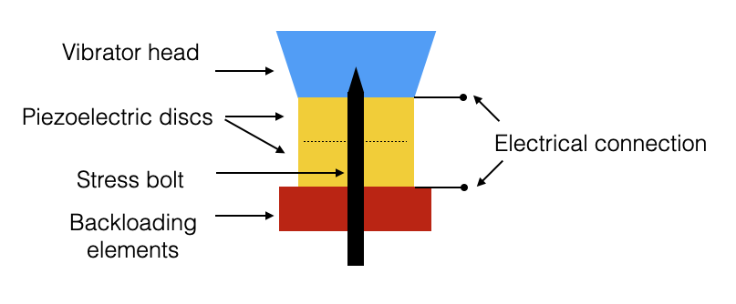 |
Figure adapted from J.M. Hovem, NTNU
- Apply an electric signal (sinusoidal) to piezoelectric discs and they deform
- Discs are anchored to a backloading fixed element and to a Vibrator hear which is a mechanical amplifier
- When deployed in water (with appropriate sealings) produces deformations in the water, i.e., pressure perturbations
- Transmitters and Receivers are conceptually the same
Frequency of mechanical vibration (for the same voltage) depends on the specific material and on the geometry.
An acoustic transmitter is composed by one or more of these elements
An acoustic receiver (i.e., hydrophone) is composed of one or more of these elements (one hydrophone is typically composed by one)
- Each basic element can typically be considered as omnidirectionals
- For ex. one hydrophone detects pressure in all directions
- They can be combined together in variuos geometry to obtain directivity of sources and receivers
- Can be done both using specific geometry of the composition
- and with signal processing called beamforming
| 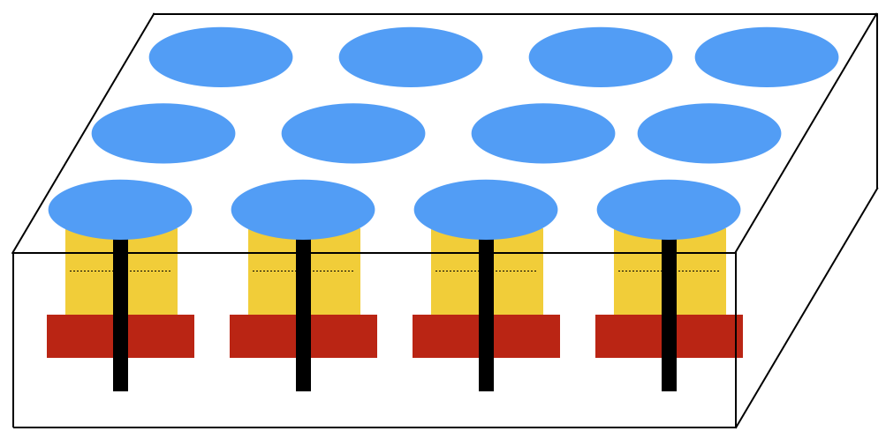 |
Figure adapted from J.M. Hovem, NTNU
- When the geometry is linear, we talk about arrays (of hydrophones) or phased arrays
- They are typically towed by ships (or by UxVs)
- Arrays can also be spherical or planar (3D)
Phased arrays
- Omnidirectional sources are not ideal for a number of applications
- Not ideal for fast steering applications
- Think of fast tracking targets
- Phased arrays streer beams electronically and can generate multiple beams in parallel and steered independently
Interference Pattern of the element determines the directivity and depends on: - Number of elements - Element spacing - Array geometry - Individual antenna patterns (in our case omnidirectional)
Near Field and Far Field
- Given a omnidirectional source (a point source would produce spherical waves in an isotrope medium - spherical attenuation)
- Unfortunately, transducers are not points and we do not have spherical waves when we are close to the source
- We distringuish between Near and Far Field
SPL: Sound Pressure Level (measure the source level)
| 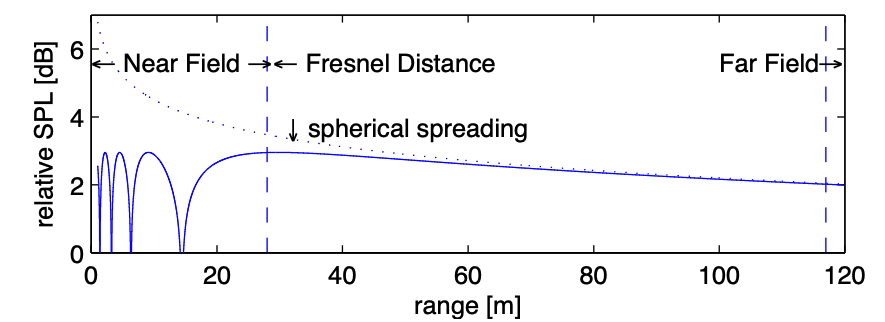 |
Figure: On-axis SPL from a circular piston with radius 6m, f = 1.2 kHz. From Jasco Underwater Acoustics Pocket Handbook, Fig. 17
- Interference and diffraction close to the surface of the piston (see max and min of the intensity in the picture above).
- Near field
- The distance after which we have monotonic behaviour is called Fresnel Distance
- Far field (or Fraunhofer zone) is where the pressure behaves following spherical attenuation is approximately 4 times the Fresnel Distance
- Depend on frequency and size of the source (higher frequency would have smaller Fresnel distance)
We will use a Far Field assumption
- Note that we defined the source level as the intensity measured at 1m from the source
- If we want to experimentally measure the SL we would be in the near field so we would not measure the actual SL but rather the interference pattern
- We would instead go to Far Field to measure the received intensity and then we would use spherical spreading to interpolate and get to 1m from the source.
- Requires not to have additional interference in the far field
- For ex if we position the source and receiver close to the surface we would hit the LLoyd’s mirror and we do not measure the SL again.
- Operational source/receiver calibrations are done in deep waters
Beamforming
Beamforming is a way of utilizing constructive interference to increase the signal gain at a certain point in space.
- Beamforming with linear array
- Suppose you have:
- a set of hydrophones aligned in a line
- source in far field
- We would receive a planar wave
| 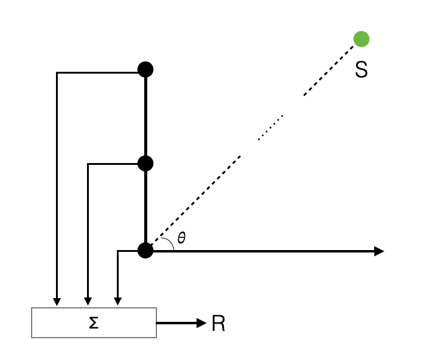 | 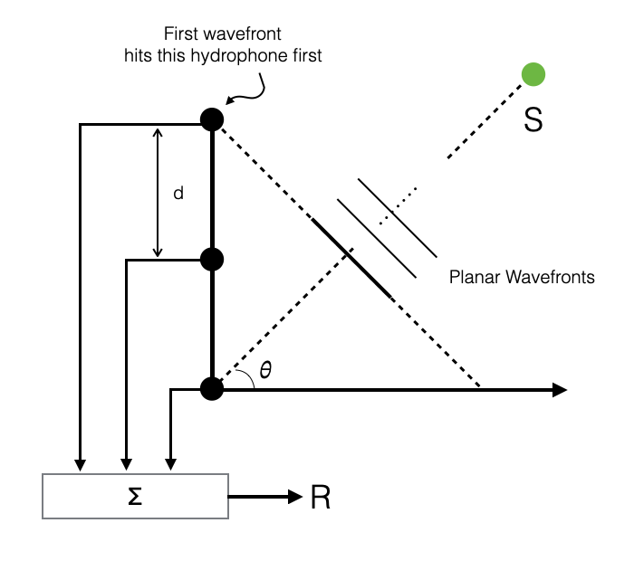 |
Wavefronts hit the hydrophones at different times
Depends on the arrival angle \(\theta\) of the wavefronts and from the distance between two consecutive hydrophones
We use a summation point to sum up all signals \(P_i\) received at every hydrophone at a specific point in time
\[ R = \sum_1^N P_i \]
where \(P_i = P_{max}e^{-ikx_i}\)
- The intensity is maximised when \(\theta=0\)
- Signal arrival is in phase at each hydrophone
| 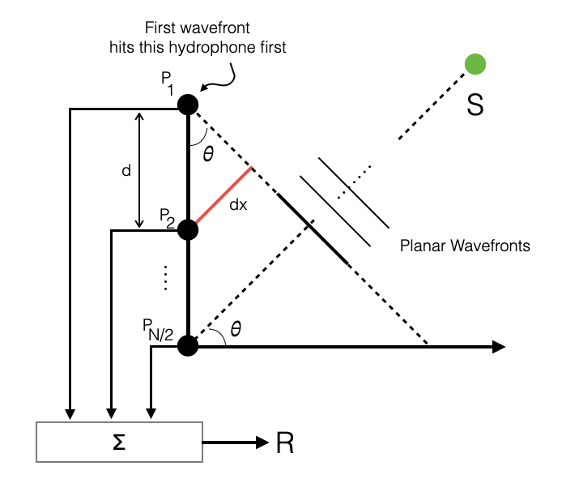 |
- When \(\theta \ne 0\), every \(x_i\) is different: \[ x_{i+1} = x_{i} + dx \]
where \(dx = d\sin\theta\) is the distance to get to the other hydrophone
this produces a phase shift at the hydrophone due to the different \(x_i\) of the wavefronts.
When \(\theta=0\) all hydrophones receive the same signal (\(\sin(0)=0\)): \[ R = \sum_1^N P_{max}e^{-ikx}\;\;\text{since}\;\; x_i=x,\; \forall i \]
The arriving wave will have maxs and mins (depends on the wavenumber), but when \(\theta=0\), the sum of max is \(NP_{max}\).
The signal is amplified by the number of hydrophones
In all other directions (\(\theta \ne 0\)) we have a lower gain (or even destructive interference)
This is called beamforming: summing up we obtain the part of the acoustic field that is coming from direction \(\theta=0\)
When signals arrive at the hydrophones at the same time, we obtain the same signal amplified (mid picture below)
When signals arrive from an angle, they have a phase shift (\(kd\sin\theta)\) and we obtain a different signal
If there is no signal at \(\theta=0\) we get something that is not amplified.
| 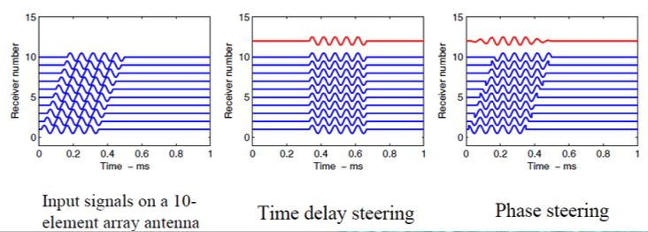 |
Note also that at each hydrophone arrives both the signal and noise (e.g., white noise \(n_i\)).
If we have white noise, summing up uncorrelated noise means attenuating the noise
We have a boost for the coherent signal and attenuation of incoherent signals (noise)
This is useful if we want to know if signal is arriving from direction \(\theta=0\)
What if I am interested in a different direction?
We could rotate the receiver to the specific direction (e.g., mechanically scanning radars)
- Not practical underwater
However, when we sample we can sum up all the data that I have received at the same time (priviledged direction \(\theta=0\))
I can also note that the phase shift at the next hydrophone is: \(kd\sin\theta\)
The wavafront has traveled \(d\sin\theta\) from one hydrophone to the next, in \(\frac{d\sin\theta}{c}\) seconds
If I buffer all the data from all the hydrophones and then:
- sum the same time \(\theta=0\)
- sum signals delayed by \(i \cdot \frac{d\sin\bar{\theta}}{c}\), where \(i\) is the hydrophone number and \(\bar{\theta}\) is a specific direction
- this corresponds to reading the signals at the same time but looking in the direction \(\bar{\theta}\)
Delaying the signals before the sum, the intensity is maximised for different values of \(\theta\).
This is equivalent to doing a phase shift at the receivers (delay in time is equivalent to phase shifts in frequency): summing signals that are in phase
- time domain: time delay steering
- frequency domain: phase delay steering
This is a signal processing operation that we can do very fast and in parallel (across multiple directions at once)
Signals depending on the direction \(\theta\) are called beams
Beamforming can be steered to desired directions \(\theta\) forming beams corresponding to the various steering directions
If there is a source at a specific direction, the beam corresponding to the source direction will have the highest intensity (the other would have lower intensity)
Array of transmitters
The same principle apply for arrays of receivers and arrays of sources
With N sources aligned, in the far field it is equivalent to have a single source with a pressure is \(N\) times that of each single element (intensity \(N^2\))
If we delay the signal transmitted by each element by \(i \cdot \frac{d\sin\bar{\theta}}{c}\) we can steer the generated wavefront
<td> <img src="./images/8.acoustic-systems/5.source-beamforming-1.png" alt="5.source-beamforming" style="width: 300px"/></td>| 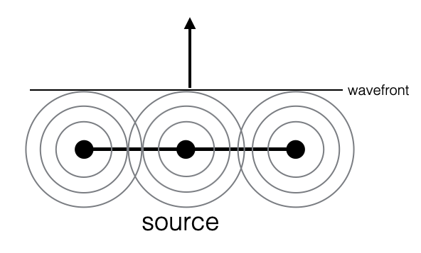 |
- Delaying in time is equivalent to a phase shift in frequency
- We can do beamforming in time and in frequency
Nice library: arlpy
and reference Basics of phased arrays
Transducer directivity and beam pattern
The beam patter provides information on how a given array distributes the signal in space. It is calculated using the signal strength as a function of spatial location for a given transmitter array.
| 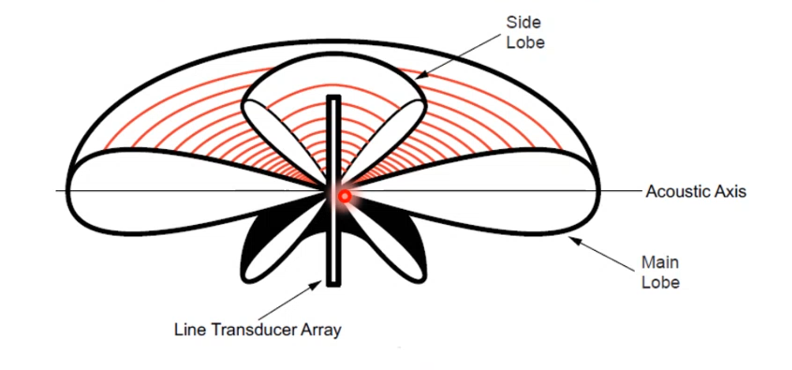 |
| Line array: maximum directivity along the acoustic axis \(\theta=0\) |
Beam pattern of a linear array. Figure from Bradley and Stern
- These diagrams, called beam patterns provide a graphical representation of the value in dB of the received pressure as a function of the angle.
- Note how intensity decreases as we move away from the \(\theta=0\)
- Note how the received pressure varies
When 0 means we are summing signals in destructive interference (opposite phase)
When the signal increase it never goes to the maximum of the main lobe
Main lobe is where we have the global maximum
Side lobes correspond to local maxima
In the sum we had the wavelength (through \(k\)) which makes it possible to calculate the minimum and maximum
Note the cylindrical symmetry of the problem (every direction that is perpendicular to the array provides a maximum)
- Limiting to a plan case: left-right ambiguity
- Delaying and summing we can rotate the beam pattern towards the direction we desire
- There is a slight deformation not a pure rotation (pure rotation approximately only between 0 and 45)
Different geometric configuration give rise to different beampatterns
| 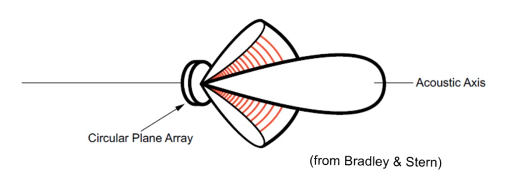 |
| Disc array: maximum directivity along the acoustic axis \(\theta=0\) |
Beampattern of a disc array. Figure from Bradley and Stern
- Maximum is along the direction perpendicular to the disc
Array Size and Beamwidth
Array of length \(L\)
Continuous (each element is infinitesimaly close to the next)
Beamwidth of the main lobe:
\[ \Delta\theta = \lambda/L \]
| 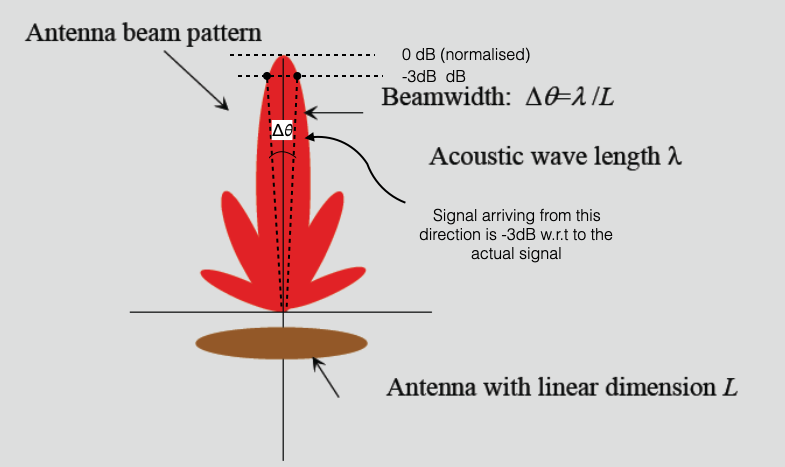 |
| Figure adapted from J.M. Hovem, NTNU |
- Formula is specific for a continuous array, but generalises for the following aspect:
In acoustics we cannot obtain similar effects to what we have with lasers which are very focused and narrow.
To reduce \(\Delta\theta\) (focusing), which means having higher resolution: - reduce \(\lambda\) wave length (move to high frequency, which however attenuates quickly) - increase \(L\), the length of the array
Tradeoff between range/frequency/resolution
- The Beamwidth of the main lobe formula makes it possible to approximate the expected resolution of a SONAR system
SONAR systems
Any system which uses acoustics to do something underwater
Specialised sonars for specific applications (e.g., ASW, echosounders, acoustic modems)
It is composed of:
- At least one receiver: we talk about passive sonars
- receiver listens from sound produces by others
- At least one transmitted and one receiver: we talk about active sonars
- receiver listens from reflections produced by the sound emitted by the source
- At least one receiver: we talk about passive sonars
| 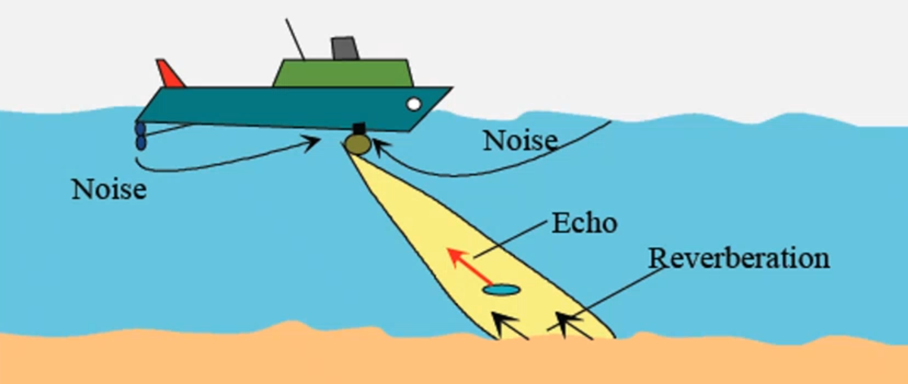 |
| Figure adapted from J.M. Hovem, NTNU |
Consider the source as composed of multiple transmitters (an array) so that we can obtain an aperture \(\Delta\theta\)
Assume that the SONAR transmits rectangular pulses with temporal width \(T\) (pulse width)
The bandwidth of the rectangular pulse \(B\approx\frac{1}{T}\)
Such a system (TX or RX) can:
- steer its beams, and each beam has beamwidth \(\Delta\theta\)
- receives from a sector that depends on the pulse width
Range Resolution
Rectangular pulse is transmitted (see figure below right)
Hits something that scatters the signal back
The signal travels \(2R\)
The space for the pulse width to hit the target is \(\delta R\) and is defined as \[\delta R = \frac{cT}{2}\]
Note that we divide by two because the signal goes back and forth
| 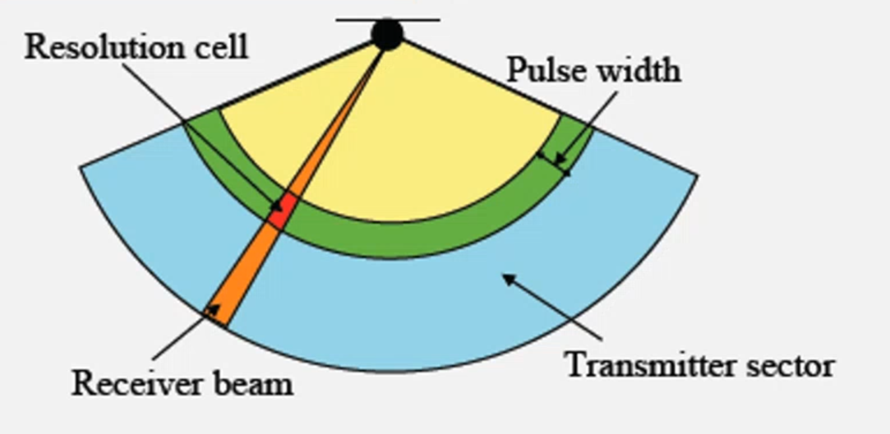 | 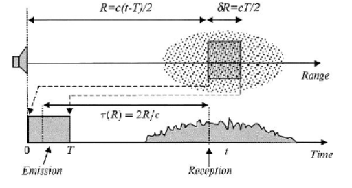 |
| Figure adapted from J.M. Hovem, NTNU |
- The SONAR resolution cell depends on:
- \(\Delta\theta\) (the receiver beam)
- \(\delta R\)
- To have high resolution
- angular resolution: \(\Delta\theta\) (increase frequency or use longer arrays)
- range resolution: \(\delta R\) must be small and we can only reduce \(T\)
- small \(T\) means higher bandwidth \(B\approx\frac{1}{T}\)
- dirac delta function would be perfect as it has infinite bandwidth
- Problem: again I need high frequency
- Tradeoff between resolution and range
- Note that we are now talking about Bandwidth: different frequencies in my bandwidth will be attenutated differently
- The further away the sound comes the smaller the resolution: only low frequencies come back (this is true in terrestrial acoustics as well).
For non rectangular impulses - Specific formulas exist - Empirical rule: take the time width corresponding to maximum signal amplitude within -3dB as rectangular envelope - Good enough for a qualitative understanding
| 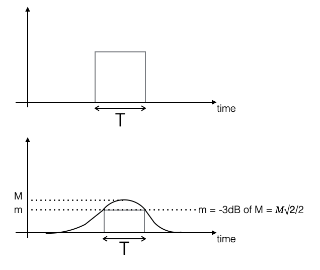 |
| Figure adapted from A. Caiti, Univ. of Pisa |
Ambient Noise is the Ocean
- We saw that together with signals we receive noise
- Noise: any disturbance, any unwanted signal that interferes with the signal carrying information
- In ocean acoustics we not only have the typical noise any information engineer needs to deal with, electrical noise, but also with Acoustic Noise or Ambient Noise.
Ambient Noise has spectral characteristics that are quite precise depending on what is causing it - Picture below (sound pressure vs frequency (log scale)) represents the typical spectral level of ambient noise, due to physical causes, and far away from the sonar system under analysis - Prevailing noise levels shown with the two solid black lines
Main sources (numbers are approximate): - Earthquakes and explosions - Low frequency (up to 100Hz) - Wind noise in shallow waters (less than 40m) - Wind propagates sound in the water column (up to 100Hz) - Traffic noise - Shallow waters (<500m) is slightly lower frequency - Deep waters (>500m) - Heavy traffic is shown as dashed line - Marine traffic can get up to 1kHz. - Sea state - Note the presence, between 100Hz and 1kHz, of noise due to the state of sea: waves at the surface produce sound in the water column. In turns, waves are due to atmospheric effects.
Heavy precipitations
- Between 100 and 30kHz
Note how moving up in frequency effects of ambient noise decreases
Moving to higher frequencies, sound is attenuated (assumption is source in far field)
For frequency > 10kHz noise is due to air and bubbles (e.g., white foam of waves: bubbles exploding and making noise at high frequency)

|
Beaufort Scale, Sea State
| Beaufort wind scale | Mean Wind Speed | Limits of wind speed | Wind descriptive terms | Probable wave height | Probable maximum wave height | Seastate | Sea descriptive terms |
|---|---|---|---|---|---|---|---|
| Knots | Knots | in metres (1) | in metres (2) | ||||
| 0 | 0 | <1 | Calm | - | - | 0 | Calm (glassy) |
| 1 | 2 | 1-3 | Light air | 0.1 | 0.1 | 1 | Calm (rippled) |
| 2 | 5 | 4-6 | Light breeze | 0.2 | 0.3 | 2 | Smooth (wavelets) |
| 3 | 9 | 7-10 | Gentle breeze | 0.6 | 1 | 3 | Slight |
| 4 | 13 | 11-16 | Moderate breeze | 1 | 1.5 | 3-4 | Slight - Moderate |
| 5 | 19 | 17-21 | Fresh breeze | 2 | 2.5 | 4 | Moderate |
| 6 | 24 | 22-27 | Strong breeze | 3 | 4 | 5 | Rough |
| 7 | 30 | 28-33 | Near gale | 4 | 5.5 | 5-6 | Rough-Very rough |
| 8 | 37 | 34-40 | Gale | 5.5 | 7.5 | 6-7 | Very rough - High |
| 9 | 44 | 41-47 | Strong gale3 | 7 | 10 | 7 | High |
| 10 | 52 | 48-55 | Storm | 9 | 12.5 | 8 | Very High |
| 11 | 60 | 56-63 | Violent storm | 11.5 | 16 | 8 | Very High |
| 12 | - | 64+ | Hurricane | 14+ | - | 9 | Phenomenal |
- Sea state is an empirical scale from 0 (flat) to 9
- Table reports:
- description of the sea state
- value of the sea state
- (average) wave height (peak-to-peak)
- wind speed
- Beaufort scale
- Typically we use the Beaufort scale that empirically determines the wind speed from the sea state
- Note how multiple descriptions might match the same seastate number
| The scale was devised in 1805 by the Irish hydrographer Francis Beaufort (later Rear Admiral), a Royal Navy officer, while serving on HMS Woolwich. |